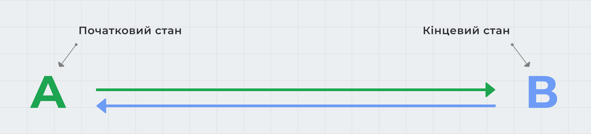

CSS-переходи дозволяють анімувати зміну значення властивості з плином часу, керуючи швидкістю цього переходу. Зміна властивостей відбувається під час настання певної події, яка описується відповідним псевдокласом, наприклад :hover.
Перехід завжди має тільки два стани - початкове та кінцеве значення властивості, і вміє змінювати це значення A > B і B > A за вказаний час. Для анімацій з великою кількістю станів необхідно використовувати CSS-анімацію.
Наступні чотири властивості управляють різними параметрами переходу.
transition-property: <властивість> transition-duration: <час> transition-timing-function: <функція розподілу часу> transition-delay: <затримка>
Все, що необхідно зробити - це вказати початкові значення анімованих властивостей і значення властивостей переходу, після чого під час події, наприклад :hover, задати нові значення властивостей, до яких ми хочемо анімувати елемент. Наведіть курсор миші на квадрат для запуску переходу.
See the Pen lesson-10-transition-properties by goit-academy (@goit-academy) on CodePen.
Корисно:
Пам'ятайте, під час додавання будь-яких переміщень (переходів та
анімацій), вони повинні бути простими, не нав'язливими і логічними.
Анімація повинна передавати смислове значення, акцентуючи увагу, не
відволікаючи користувача від взаємодії з контентом.
Задає властивості, до яких буде застосований ефект переходу. Значенням може бути одна властивість або список властивостей через кому. За замовчуванням значення all - анімуються всі можливі властивості.
.box {
background-color: teal;
transition-property: background-color;
}
.box:hover {
background-color: orange;
}
Увага:
Список властивостей, які можуть бути анімовані в майбутньому може
змінитися. Тому обов'язково необхідно вказувати властивість, яку
потрібно анімувати, інакше будуть анімовані всі можливі властивості
елемента, що призведе до несподіваних результатів.
.box {
background-color: teal;
transition-property: background-color;
transition-duration: 1000ms;
}
.box:hover {
background-color: orange;
}
See the Pen lesson-10-transition-duration by goit-academy (@goit-academy) on CodePen.
Задаєфункцію розподілу часу функцію розподілу часу, яка описує швидкість переходу властивості від одного значення до іншого за час, вказаний в transition-duration, тобто поведінка анімації.
.box {
background-color: teal;
transition-property: background-color;
transition-duration: 1000ms;
transition-timing-function: linear;
}
.box:hover {
background-color: orange;
}
В CSS існує кілька ключових слів для опису базових функцій Безьє. За замовчуванням використовується значення ease - перехід починається повільно, швидко прискорюється, а потім знову сповільнюється в кінці. Решта ключових слів: linear, ease-in, ease-out, і ease-in-out.
See the Pen lesson-10-transition-timing-function by goit-academy (@goit-academy) on CodePen.
Затримка, після якої почнеться анімація переходу. Використовується для побудови сценаріїв - послідовності переходів різних елементів. За замовчуванням задано значення 0s.
У прикладі встановлена затримка 500ms. Наведіть курсор миші на квадрат, і перехід почнеться тільки через півсекунди після цієї події.
See the Pen lesson-10-transition-delay by goit-academy (@goit-academy) on CodePen.
Всі властивості переходу можна об'єднати в одну збірну властивість transition.
transition: [property] [duration] [timing-function] [delay]
Якщо анімується кілька властивостей, то набір значень для кожного з них розділяється комою. Необхідно обов'язково вказати властивість і час переходу, функцію часу і затримку можна не вказувати, тоді для них будуть використані значення за замовчуванням.
transition: background-color 500ms linear, transform 500ms ease-in-out;
See the Pen lesson-10-transition-property by goit-academy (@goit-academy) on CodePen.
Напишемо простий сценарій переходу кольору фону і обертання блоку. Спочатку блок повинен змінити колір, і тільки після цього почати обертатися. Все, що необхідно зробити, - це вказати перехід обертання, почекати стільки часу, скільки займе анімація зміни кольору фону.
transition: background-color 500ms linear, transform 500ms ease-in-out 500ms;
See the Pen lesson-10-transition-delay-script by goit-academy (@goit-academy) on CodePen.